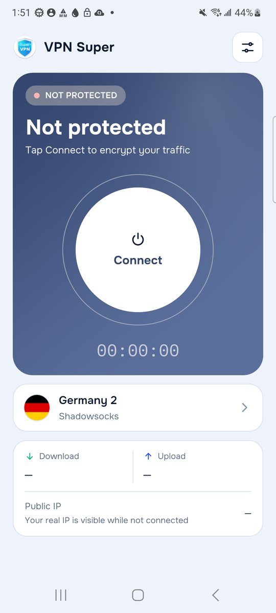
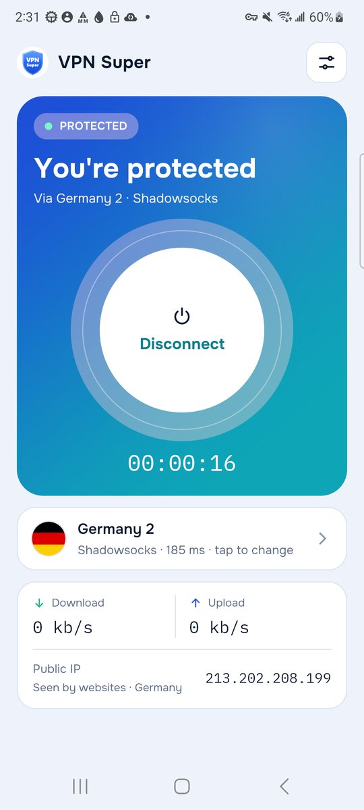
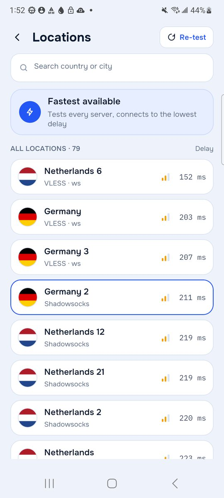
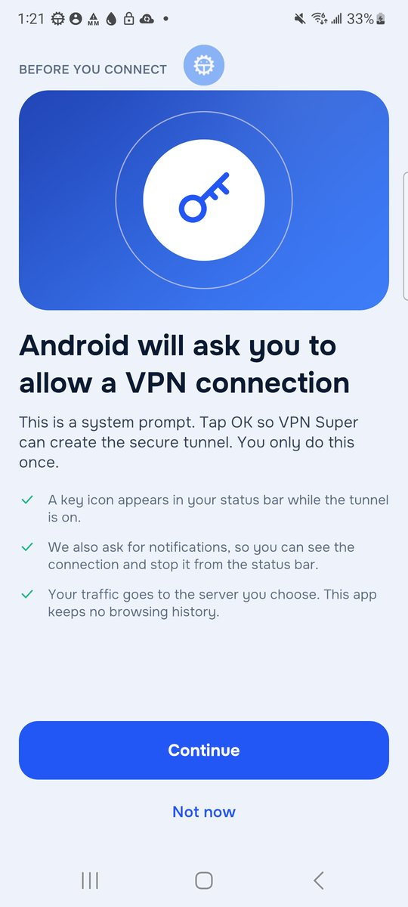
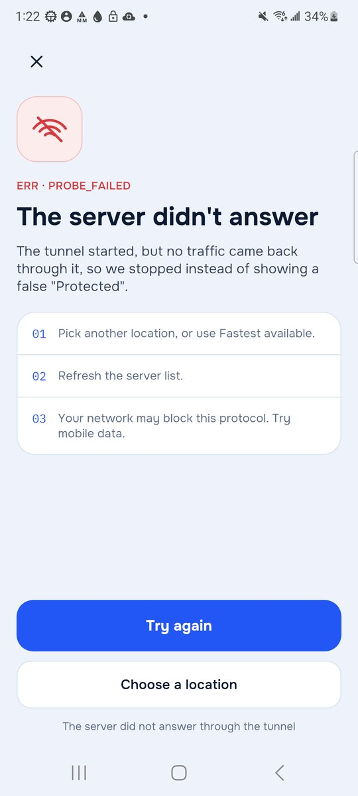

Tap Connect
The first time, the app explains Android's VPN permission before the system asks. After that, one tap is all it takes.
Free VPN · Android · HUAWEI AppGallery
One tap. Fastest server.
VPN Super sends your phone's internet traffic through a VPN server of your choice, so the websites and apps you use see the server's IP address and location instead of yours. Tap Connect and it tests the servers, picks the quickest one and checks that traffic really flows before it says you're protected.
“Protected” only appears after a real test through the tunnel
Free · Contains ads · No account or sign-up · Android 7.0 and newer

How it works
Every screen below is a real capture from VPN Super on a Samsung Galaxy S21.

The first time, the app explains Android's VPN permission before the system asks. After that, one tap is all it takes.

VPN Super measures the delay to every server and connects to the quickest. If one fails, it moves on to the next-best server by itself.
“Protected” appears only after traffic has gone through the tunnel. You see the IP address and country websites now see, plus live speed and a timer.
Features
No feature on this page is a promise for later.
Tests the servers and connects to the one with the lowest delay, with an automatic fallback if the first choice doesn't answer.
Browse every server with its flag, protocol and measured delay, search by country, and pick the one you want.
Change location while connected: the tunnel moves to the new server instead of shutting down first.
Shows the public IP address and country that websites see, looked up through the tunnel itself.
Leave chosen apps outside the VPN, for example a banking app that blocks VPN connections.
DNS lookups go through the tunnel, and IPv6 is blocked unless you switch it on, so it can't leak around the VPN.
A shortcut opens Android's own Always-on VPN and “Block connections without VPN” settings.
The VPN keeps running when you leave the app, with a status notification you can disconnect from.
Straight answers


Screenshots
Real captures from version 1.3. Tap one to enlarge it.
Ads did not load on this test phone, which has no HUAWEI Mobile Services. On HUAWEI devices a banner appears at the bottom of the screen.
About the app
VPN Super is built on the open-source Xray engine and Android's own VPN system. The app runs the tunnel in a separate background process, so it keeps working while you use other apps.
It is free and paid for by ads from HUAWEI Ads (Petal Ads), shown as a banner and occasionally after you disconnect, never while you are connecting.
Free on HUAWEI AppGallery for Huawei and Honor phones, and other Android phones with AppGallery installed.
Questions? See Support or email maani1pk@gmail.com.